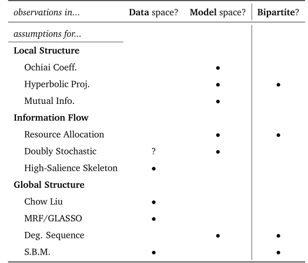

Roads to Network Recovery
“Network data cleaning is thus the lovechild of network backboning and link prediction, but that’s a rather barren marriage – as far as I know.”
– Michele Coscia
Here we give a brief overview of the key approaches to backboning and dependency recovery for networks through binary activations. We organize the literature into categories based on the kinds of constraints that have been applied to make the network reconstruction “inverse problem” tractable: local structure, information-flow/resource constraints, or global structure. Finally, we assess patterns in the assumptions made by the presented algorithms, and motivate the need for a new approach to fill a perceived gap in the network recovery space.
Organizing Recovery Methods
All recovery methods will require assumptions in addition to data to accomplish their task. As discussed in [1], there are fundamental difference in dependency capability between the network and hypergraphic/bipartite representations of complex systems. Necessarily, some information will be lost in translation between the two forms.
[1]
L. Torres, A. S. Blevins, D. Bassett, and T. Eliassi-Rad, “The why, how, and when of representations for complex systems,” SIAM Rev., vol. 63, no. 3, pp. 435–485, Jan. 2021, doi: 10.1137/20M1355896.
As a (hopefully) helpful way to organize the various kinds of assumptions that are taking bipartite observations to simple graphs, we present an organization of common modeling assupmtions into three loosely-defined groups:
- Local Structure & Additivity
- Information Flow & Resource Constraints
- Global Structure Models
In truth, this classification should be viewed as more of a sliding scale, with approaches falling somewhere within. Some approaches make very few assumptions about the shape a resulting network “should” take, but do so by making strong assumptions about how individual observations relate to a desired quantity, and especially how those observations are able to be combined to result in an “answer”, however that looks. Others instead provide clear normative constraints on the overall network topology, or emission mechanism, but this allows for flexibility in how data is individually handled.
This distinction could be thought of as a scale, which serves a role similar to pooling in bayesian inference. Do individuals (observations) all have fundamentally separate distributions, so that global behavior (and by extension, uncertainty) is an aggregate phenomena? Or do individuals (observations) inherit parameters from a global distribution shared by all, and anything outside that structural assumption must be “noise”? In between the extremes, some other assumption as to how the global and local scales mitigate information between them is required, i.e., partial pooling. In this domain, what we often see are attempts to perform noise corrections through the way information is thought to travel between nodes, generally.
For each of the above three groups we provide examples to illustrate modeling patterns and highlight common practice.1
1 For a deeper assessment of the broad space of backboning and edge prediction in general a reader may be interested to see the overview in [2].
[2]
M. Coscia, The atlas for the aspiring network scientist. Michele Coscia, 2021. Available: https://arxiv.org/abs/2101.00863
Local Structure & Additivity Assumptions
These are, together, typically called “association” measures. While they are sometimes presented as functions of the entire dataset, they nearly always find a basis in the inner-product operation, and have definitions in terms of contractions along the data/observation dimension. By relying on the (Euclidean) inner product, even with various re-weighting or normalization schemes, an analyst is making strong assumptions about their ability to reliably take measurements from linear combinations of observed activation vectors.
Essentially, if a measure relies on marginal counts or summation over the data axis, then the main assumptions are at the local level, about whether what we are adding together estimates our target correctly. The most basic would be to count co-occurrences, and consequently the co-occurrence probability \(p_{11}=P(A,B)\). However, for very rare co-occurrences, we need to correct for rate-imbalance of the nodes in much the same way correlation normalizes covariance. This idea leads to “cosine similarity”
[3]
S. Janson and J. Vegelius, “Measures of ecological association,” Oecologia, vol. 49, no. 3, pp. 371–376, Jul. 1981, doi: 10.1007/bf00347601.
[4]
D. Allard, A. Comunian, and P. Renard, “Probability aggregation methods in geoscience,” Math Geosci, vol. 44, no. 5, pp. 545–581, Jul. 2012, doi: 10.1007/s11004-012-9396-3.
This interpretation of cosine similarity as the geometric mean of conditional probabilities is particularly useful when trying to approximate interaction rates. The geometric mean as a pooling operator is conserved through Bayesian updates [4], so the use of a prior with co-occurrences as base counts is possible for additive smoothing. To do this, the goemetric mean of marginal counts acts as a “psedovariable” for exposure somewhere between A and B. Empirically, this is a powerful approximation with good performance characteristics, for relatively little effort.
[5]
G. U. Yule, “On the methods of measuring association between two attributes,” Journal of the Royal Statistical Society, vol. 75, no. 6, p. 579, May 1912, doi: 10.2307/2340126.
Odds ratio is important to logistic regression, where the coefficients are usually the log-odds ratios of occurrence vs. not (\(\log{\text{OR}}\)).
Yule’s Y, also called the “coefficient of colligation”, tends to scale with association strength in an intuitive way, so that proximity to 1 or -1 paints a more useful picture than the odds-ratio alone.
Another association measure, based in information theory, asks “how much can I learn about one variable by observing another?”
It is non-negative, with 0 occurring when A and B are independent. There are many other information-theoretic measures related to MI, but we specifically bring this up as it will be the basis for the Chow Liu method, later on.
Sometimes, especially in social networks, we might want to avoid overcounting relationships with very well-connected nodes. This was brought up with respect to the normalized Laplacian before, but we could also perform a normalization on the underlying bipartite adjacencies.
[6]
M. E. J. Newman, “Scientific collaboration networks. II. Shortest paths, weighted networks, and centrality,” Physical Review E, vol. 64, no. 1, p. 016132, Jun. 2001, doi: 10.1103/physreve.64.016132.
So far this is the first measure that re-weights observations before contraction, so that it depends on having the individual observations available (rather than only the gram matrix). In this case, each observation’s entries are all equally re-weighted by the number of activations in it (each nodes “activation fraction” in that observation).
Resource and Information Flow
These methods are somewhere between local and global constraint scales. This is accomplished by imagining nodes as having some amount of a resource (like information or energy) and correcting for observed noise in edge activation by reinforcing the geodesics that most likely transmitted that resource.
First, closely related to hyperbolic re-weighting, we can imagine the bipartite connections as evenly dividing each nodes’ resources, before reallocating them to the nodes they touch, in turn. For instance, we might say each author splits their time among all of the papers they are on, and in turn every co-author “receives” an evenly divided proportion of everyone’s time they are co-authoring with.
[7]
T. Zhou, J. Ren, M. s. Medo, and Y.-C. Zhang, “Bipartite network projection and personal recommendation,” Phys. Rev. E, vol. 76, no. 4, 4, p. 046115, Oct. 2007, doi: 10.1103/PhysRevE.76.046115.
Interestingly, we could see this as a two-step random-walk normalization of the bipartite adjacency matrix. First \(X\) is row-normalized, then column-normalized. The final matrix is asymmetric, so a symmetric edge strength estimate is often retrieved by mean, max, or min reduction operations.
Rather than stop after two iterations, continuing to enforce unit marginals to convergence is known as the Sinkhorn-Knopp algorithm, which converges to a doubly-stochastic matrix (both marginal directions sum to 1).
[10]
P. B. Slater, “A two-stage algorithm for extracting the multiscale backbone of complex weighted networks,” Proceedings of the National Academy of Sciences, vol. 106, no. 26, pp. E66–E66, Jun. 2009, doi: 10.1073/pnas.0904725106.
[9]
M. Cuturi, “Sinkhorn distances: Lightspeed computation of optimal transport,” in Proceedings of the 27th international conference on neural information processing systems - volume 2, in NIPS’13. Red Hook, NY, USA: Curran Associates Inc., 2013, pp. 2292–2300.
[8]
B. Landa and X. Cheng, “Robust inference of manifold density and geometry by doubly stochastic scaling,” SIAM Journal on Mathematics of Data Science, vol. 5, no. 3, pp. 589–614, Sep. 2023, doi: 10.1137/22M1516968.
As the name implies, the optimal transport plan reflects the minimum cost to move some amount of resource from one node to another. By focusing on best-case cost, we enforce a kind of “principle of least action” to bias recovery toward edges along these geodesics.
A more direct way to do this, perhaps, is to find the shortest paths from every node to each other node, and aggregate them.
[11]
D. Grady, C. Thiemann, and D. Brockmann, “Robust classification of salient links in complex networks,” Nature Communications, vol. 3, no. 1, May 2012, doi: 10.1038/ncomms1847.
Unfortunately, HSS is forced to scale with the number of nodes, and must calculate the entire spanning tree for each one.
Global Structural Assumptions
Often times these constraints are as simple as “the underlying dependency graph must belong to a family \(\mathcal{C}\)” of graphs. Observations are thought of as emissions from a set of node distributions, where edges are representations of dependency relationship between them. To provide a foundation to formalize this notion, one framework is that of Markov Random Fields, which are undirected generalizations of bayes nets [12] that use edges to encode conditional dependence between node distributions.
[12]
R. Kindermann, Markov random fields and their applications. American Mathematical Society, 1980, p. 142.
One of the original structures for MRFs that we could recover from observed data was a tree.
[13]
C. Chow and C. Liu, “Approximating discrete probability distributions with dependence trees,” IEEE Transactions on Information Theory, vol. 14, no. 3, pp. 462–467, May 1968, doi: 10.1109/tit.1968.1054142.
[14]
L. L. Duan and D. B. Dunson, “Bayesian spanning tree: Estimating the backbone of the dependence graph,” arXiv, arXiv:2106.16120, Jun. 2021. doi: 10.48550/arXiv.2106.16120.
Recent work has made it possible to enforce spanning tree structure while efficiently performing monte-carlo-style bayesian inference, which estimates a distribution over spanning trees that explain observed behavior, and by extension the likelihood each edge is in one of these trees. [14]
If instead we imagine our MRF as being made up of individual Gaussian emissions, then the overall network will be a multivariate gaussian with pairwise dependencies along the edges. In fact, as a consequence of the Hammersley–Clifford theorem, the conditionally independent variables are precisely the set of zero entries in the the precision (inverse-covariance) matrix \(\Theta\) of the multivariate model. Exploiting this fact leads to a semidifinite program to minimize the frobenius-norm of \(\Theta\) with the sample covariance \(\| \hat{\Sigma}\Theta \|_F\)2
2 Since the sample covariance will not give an unbiased estimate for precision, these problems often require significant regularization. This class of problems is called “covariance shrinkage”, though we more specifically care about precision shrinkage as illustrated in Note 4.9.
[16]
P. Loh and M. J. Wainwright, “Structure estimation for discrete graphical models: Generalized covariance matrices and their inverses,” in Advances in neural information processing systems, Curran Associates, Inc., 2012. doi: 10.1214/13-aos1162.
[15]
J. Friedman, T. Hastie, and R. Tibshirani, “Sparse inverse covariance estimation with the graphical lasso,” Biostatistics, vol. 9, no. 3, pp. 432–441, Jul. 2008, doi: 10.1093/biostatistics/kxm045.
3 something that this work attempts to begin addressing through standard reference datasets like MENDR, more on which is discussed in Simulation Study
The “singleton separator” condition means that only MRFs structured like trees or block graphs will have graph-structured precision matrices returned by the GLASSO program. In effect (for the purpose of recovery from binary node activations) using GLASSO assumes either multivariate gaussian structure, or at the very least that all clique-separator sets are single-node. In practice, GLASSO is used for more than just this, but with theoretical misspecification we must rely more on empirical validation.3
There are many other models in this class, which provide strong global assumptions to make inference tractable. Not all look like structural assumptions on the graph structure itself, like Degree Sequence Models. [17], [18] They assume that the fundamental property of these datasets is their bipartite node degree distributions, leading to a generative model that can sample bipartite adjacency matrices with similar observation/node degree distributrions4
[17]
Z. Neal, “The backbone of bipartite projections: Inferring relationships from co-authorship, co-sponsorship, co-attendance and other co-behaviors,” Social Networks, vol. 39, pp. 84–97, Oct. 2014, doi: 10.1016/j.socnet.2014.06.001.
[18]
Z. P. Neal, R. Domagalski, and B. Sagan, “Comparing alternatives to the fixed degree sequence model for extracting the backbone of bipartite projections,” Sci Rep, vol. 11, no. 1, p. 23929, Dec. 2021, doi: 10.1038/s41598-021-03238-3.
4 In that literature the “observation” partition’s nodes are typically called “artifacts” instead.
[19]
T. P. Peixoto, “Reconstructing networks with unknown and heterogeneous errors,” Phys. Rev. X, vol. 8, no. 4, p. 041011, Oct. 2018, doi: 10.1103/PhysRevX.8.041011.
[20]
T. P. Peixoto, “Network reconstruction and community detection from dynamics,” Phys. Rev. Lett., vol. 123, no. 12, p. 128301, Sep. 2019, doi: 10.1103/PhysRevLett.123.128301.
Still others assume that the graphical structure can be described as generated by Stochastic Block Models, a meta-network of communities and their inter-community connection probabilities. They don’t constrain the graph class itself, but instead prescribe a generative process for graph creation (through community blocks). These have very nice properties for bayesian inference of structure, and can be modularly combined or nested for varying levels of specificity and hierarchical structure, sometimes with incredible computational efficiency. [19], [20]
A Path Forward
In addition to the categories above, there is a second “axis” that practitioners should keep in mind when selecting their recovery algorithm of choice. Each of the above listed techniques can be mostly separated into two categories, based on whether hypergraphic/bipartite observations are assumed to be in data space, or in model space.
Observation space assumptions
Recall from Models & linear operators: an operator takes our model parameters and maps them to data space. The implication for inverse problems is a need to remove the effect of the operator, because we cannot directly observe phenomena in a way compatible with our model (e.g., which might model underlying causal effects).
This is a core point of view in [21], where those authors describe nearly all of network analysis as inferring hidden structure:
“Here we argue that the most appropriate stance to take is to frame network analysis as a problem of inference, where the actual network abstraction is hidden from view, and needs to be reconstructed given indirect data.”
– Peel et al., [21]
We note that this isn’t strictly true, assuming that the “network” is intended to represent something measured by the direct observation. For instance, if a network is intended to represent a discretization of distances (such as a k-nearest neighbors approximation) for computational efficiency. The co-occurrence measures can be thought of as estimators of node-node distances, especially with appropriate smoothing to remove zero-valued distances from undersampling.5 In otherwords, if an analyst wishes to discretize distances as incidences in a complex network, they are effectively using “high-pass” filter to remove low-similarity entries, which is an effective way to assess community structure—exactly like clustering for continuous data.6 In fact, for an example of this exact network-as-discretization idea being used for state-of-the-art clustering performance, see HDBSCAN in [22].
5 See Maximum Spanning (Steiner) Trees for an elaboration of this connection via the “forest kernel”.
6 Or, at a slight risk of reductionism, drawing a world atlas with two colors for “above and below sea-level”: useful simplification for rapid assessment of shapes.
[22]
C. Malzer and M. Baum, “A hybrid approach to hierarchical density-based cluster selection,” in 2020 IEEE international conference on multisensor fusion and integration for intelligent systems (MFI), IEEE, Sep. 2020, pp. 223–228. doi: 10.1109/mfi49285.2020.9235263.
Because it is difficult to know a priori what a domain will require of network analysts, our main recommendation is for algorithm creators to transparently describe their technique’s data-space assumption:
- are observations already in model space, perhaps with with alleatoric noise to be removed?, or,
- are they in data space and require solving some form of inverse problem to recover a model specification?
Once again from the [21] review:
Surprisingly, the development of theory and domain-specific applications often occur in isolation, risking an effective disconnect between theoretical and methodological advances and the way network science is employed in practice.
– Peel et al. [21]
[21]
L. Peel, T. P. Peixoto, and M. De Domenico, “Statistical inference links data and theory in network science,” Nature Communications, vol. 13, no. 1, Nov. 2022, doi: 10.1038/s41467-022-34267-9.
In a similar vein, we believe that a large amount of metrological inconsistency and struggle has at its heart a communication and technology transfer problem, which standardization and community toolkit support can hopefully work toward fixing.
Filling the local+data “gap”
With this in mind, we show in Table 4.1 an overview of the covered approaches, and whether the method presumes operation on observations in the same space as the model, or if some inverse problem is needed.
To add to the point, the last column in Table 4.1 shows whether the full bipartite representation is even needed to perform the technique, or if it is possible with the gram matrix or marginal values alone.7
7 note that any of these could make use of the bipartite “design matrix”, e.g., to estimate the edge support with stability selection[23] by subsampling it multiple times and repeating the algorithm accordingly.
[23]
N. Meinshausen and P. Bühlmann, “Stability selection,” Journal of the Royal Statistical Society Series B: Statistical Methodology, vol. 72, no. 4, pp. 417–473, Aug. 2010, doi: 10.1111/j.1467-9868.2010.00740.x.
[24]
H. J. Bierens, “The nadaraya–watson kernel regression function estimator: Estimation, testing, and specification of cross-section and time series models,” in Topics in advanced econometrics, 1. paperback ed., New York: Cambridge Univ. Press, 1996, pp. 212–247.
[25]
E. L. Kaplan and P. Meier, “Nonparametric estimation from incomplete observations,” Journal of the American Statistical Association, vol. 53, no. 282, pp. 457–481, Jun. 1958, doi: 10.1080/01621459.1958.10501452.
In the next sections, we focus on filling a gap for models that only make local assumptions and preserve additivity, but assumes that data is not represented directly in the network model-space. Much like the role that nonparametric estimators like KDE/Nadarya-Watson play in regression, or Kaplan-Meier estimators in survival analysis,[24], [25] additive models only make assumptions about local structure. But from these assumptions, they can provide critical insight into data and its structure, and push analysts to make regular “sanity checks” when results or assumptions conflict.